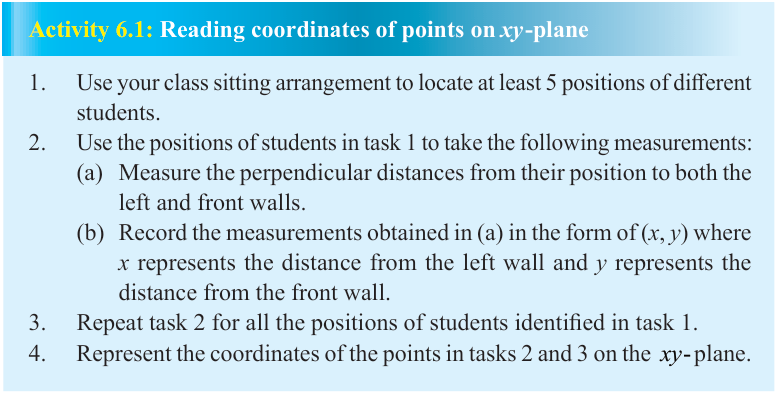
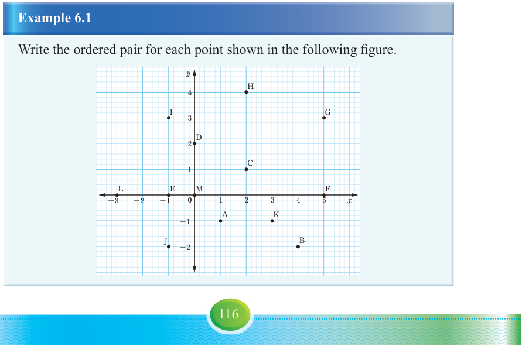

Each point on a plane is uniquely represented by means of an ordered pair of real numbers called the coordinates of a point. The xy-plane is divided into four parts called quadrants as shown in Figure 6.1. The first quadrant (I) has positive values of x and y, the second quadrant (II) has negative values of x and positive values of y. The third quadrant (III) has all negative values of x and y and the fourth quadrant (IV) has x positive values and y negative values. Recall that, the positions of points on the xy-plane are determined by using the x and y coordinates. For example, for the point (4, 6), the first number 4 represents a distance from the origin along the x-axis and 6 represents a distance from the origin along the y-axis. Engage in Activity 6.1 to review the basic concepts in coordinate geometry.

Activity 6.1: Reading coordinates of points on xy-plane

Example 6.1
Write the ordered pair for each point shown in the following figure.